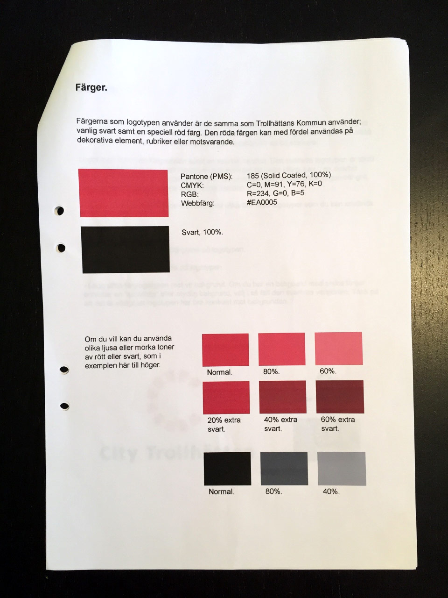

Once, back in 2004-2006, I worked as a full-stack designer. I did art direction, design and final art(originalare) for web and print. Some clients were my own, but other was through my work with Miami Advertising in Gothenburg.
Here follows some examples of my work.
Logo and graphic manual. City Trollhättan is an association of shop owners in central Trollhättan, Sweden. The logo was designed specifically to work in a busy shop environment. I wanted the logo to be timeless and not intrude on any other designs. and to be visible from angles (like on a clerk desk).
The logo was used for about ten years until replaced around 2014, and can still be found in Trollhättan.
Logo and graphic manual, for a car dealership in Gothenburg, Sweden. At the time CMS was an authorised Volvo dealer, so I used colors from Volvo's design manual to allow colorful designs that would not clash with Volvos colors. I chose an orange color that was not used much at the time (most Volvo dealers used blue). The logo and color is still in use: CMS Group website
I also produced newspaper ads and other printed material with this design for CMS at the time.
Logo, printed material. Entreprenörsdagen was an annual event with speakers on entrepreneurship in Sweden. For two consecutive years, I did the overall art direction for the events and produced flyers, invitations, roll-ups and other material. Below is an invitation for 2005. The theme of the year was internationalism, so I did a design that took inspiration from the UN flag, and classical 1950's graphics of the Dag Hammarskjöld era.